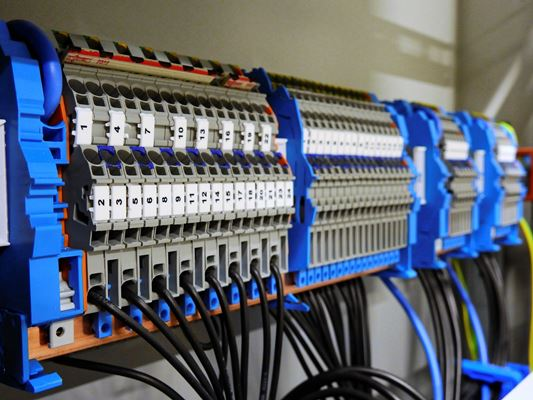

Co nas wyróżnia
Uprawnienia elektryczne SEP
Każdy elektryk posiada ważne uprawnienia elektryczne SEP w zakresie napraw i wykonawstwa instalacji elektrycznych.
Wykształcenie elektryków
Możemy się pochwalić wykształceniem technicznym kierunkowym - dyplomami technikum elektrycznego lub uczelni wyższej na kierunku elektrotechnika.

Doświadczenie w zawodzie elektrykah
Nie ma nic cenniejszego niż doświadczenie. Jesteśmy praktykami, będąc w zawodzie nieustannie poznajemy nowe technologie i dokształcamy się w codziennej pracy i na szkoleniach.

Wysoka kultura osobista
Wykształcenie i doświadczenie na nic się zda, jeżeli w parze nie idzie kultura osobista pracowników. Kładziemy na to nacisk, wiedząc, że najważniejsze to dobry odbiór i zadowolenie klienta z usług elektrycznych.